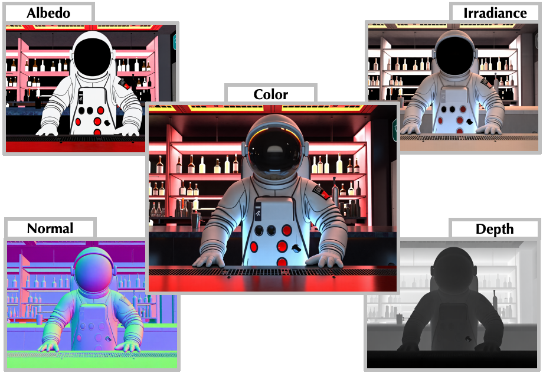
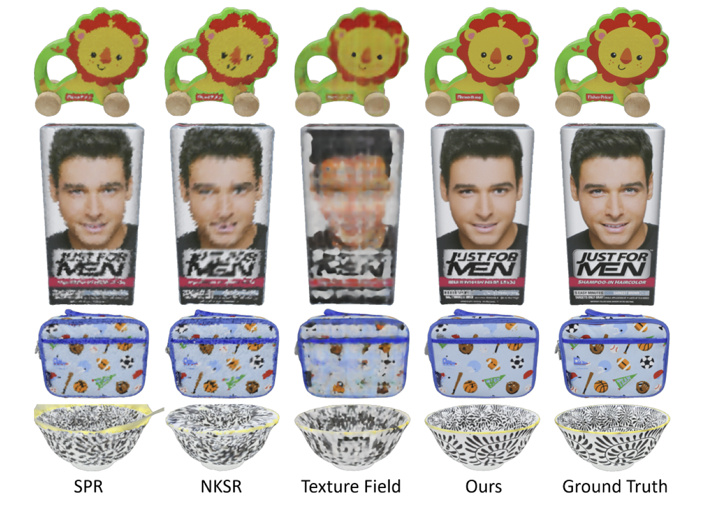
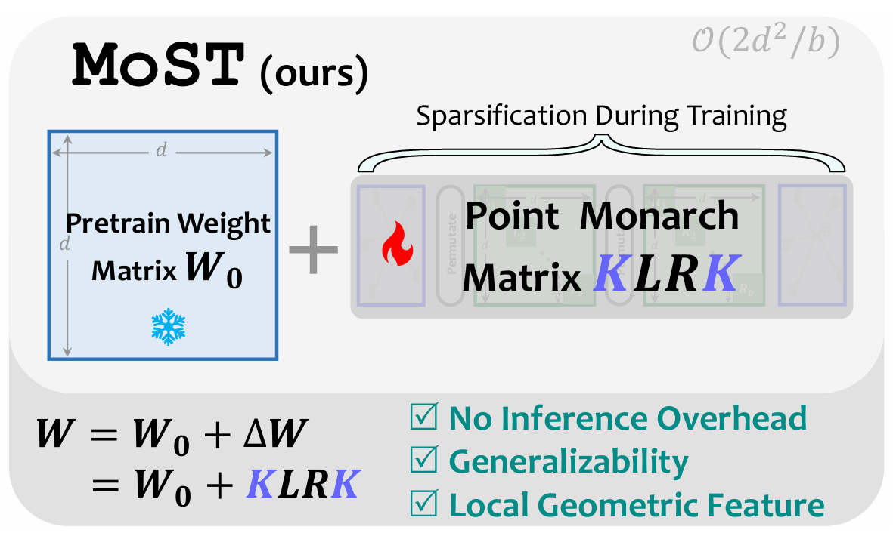
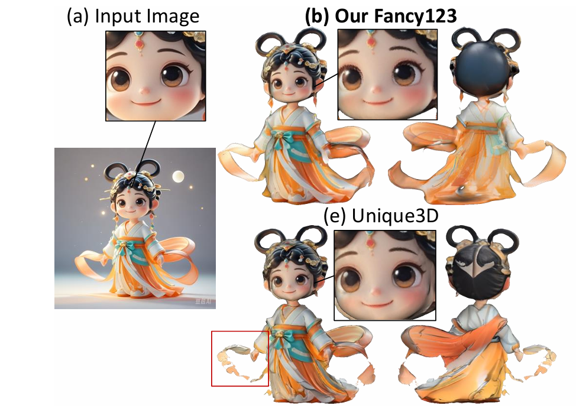
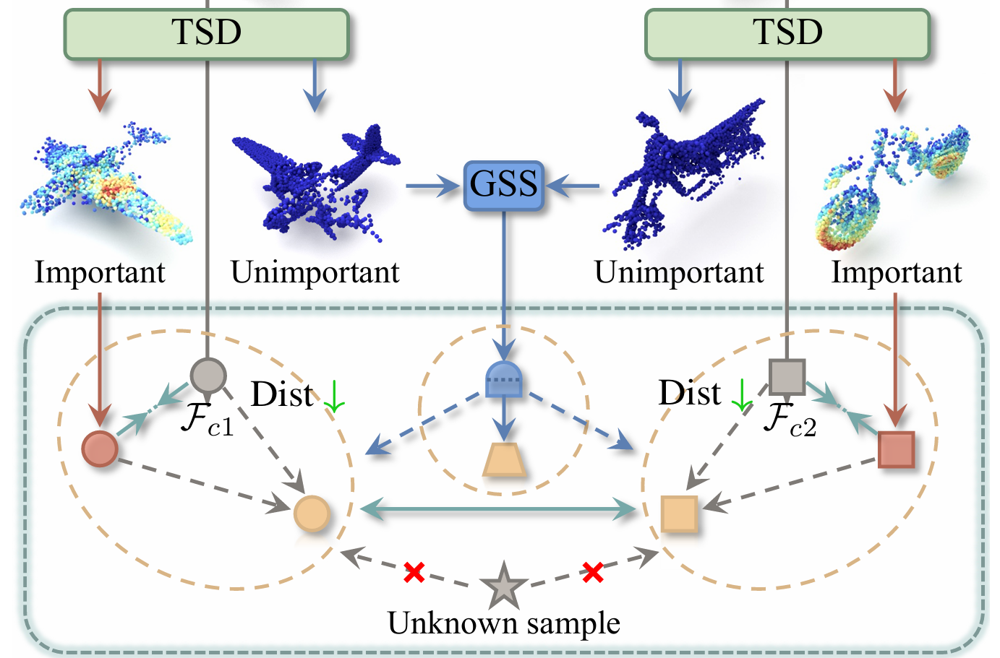
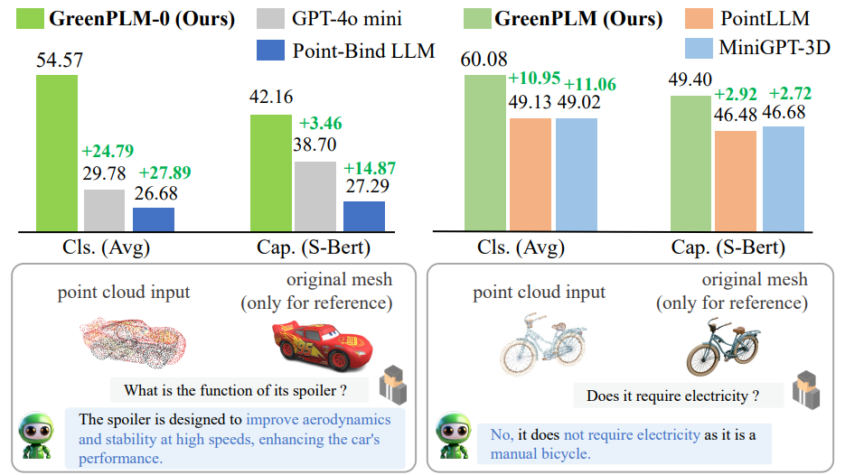
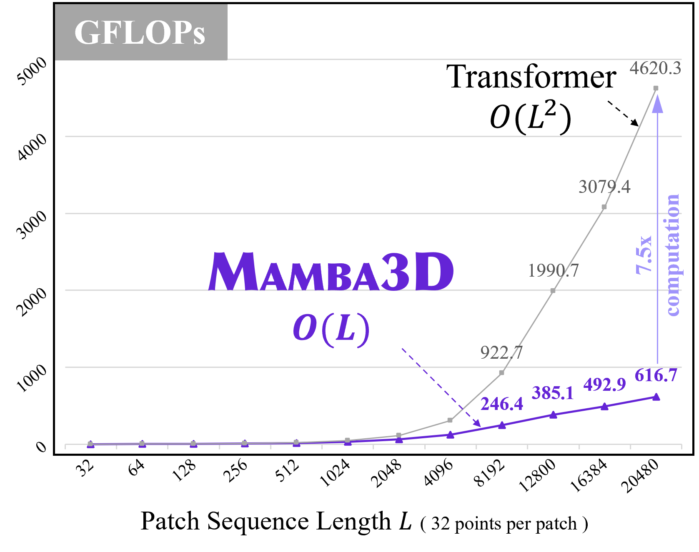
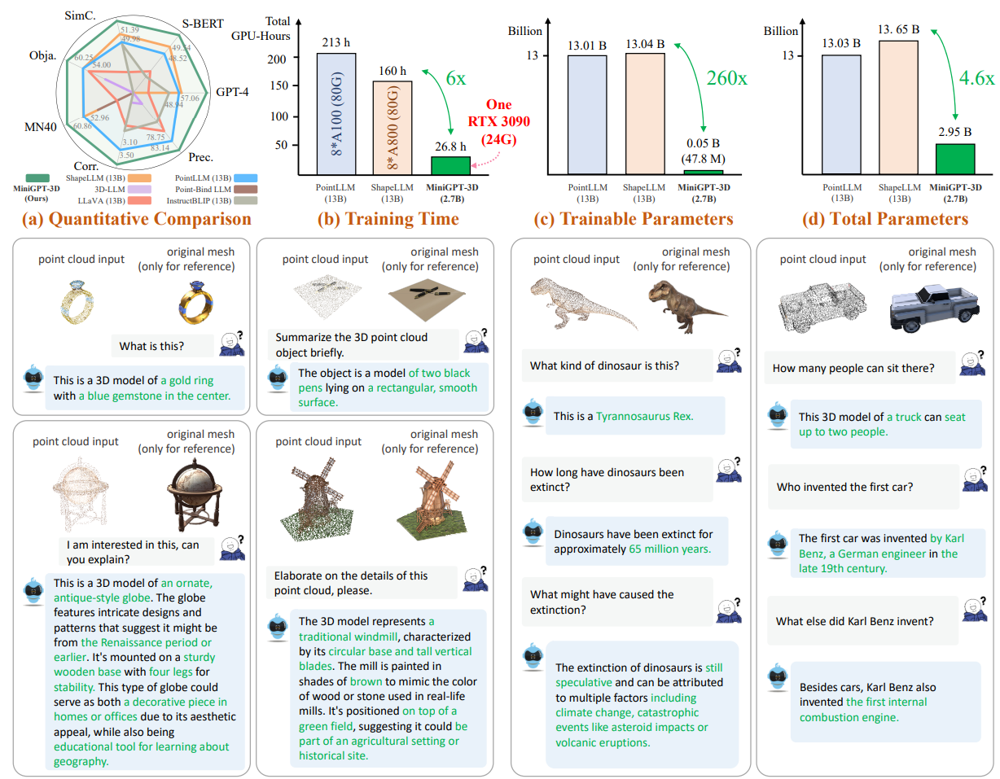
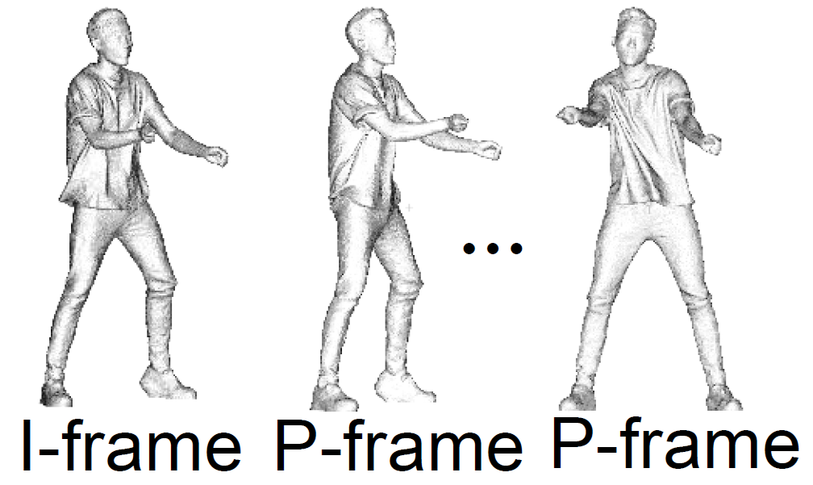

LumiX: Structured and Coherent Text-to-Intrinsic Generation
Abstract
BibTeX
Make it count.
I am a final-year graduate student in computer science at Huazhong University of Science and Technology, advised by Prof. Xianzhi Li. I was a research intern at King Abdullah University of Science and Technology (KAUST), working with Prof. Peter Wonka. Before that, I received my B.Eng. degree with honors from the School of Computer Science at Shandong University in 2023, where I worked closely with Prof. Mengbai Xiao.
My research lies at the intersection of generative modeling, 3D vision, and multimodal learning. I study how models can learn useful structure from visual and spatial data, and use it to understand and generate complex scenes.
I’m always open to thoughtful collaborations across these areas.
I am particularly interested in world models that capture not only what an environment looks like, but also how it changes and responds to action. I hope to develop models that draw on visual, geometric, and linguistic evidence to predict future states and support reasoning and action in dynamic environments.
Generative Models · 3D Vision · Multimodal Learning * equal contribution · † corresponding author








